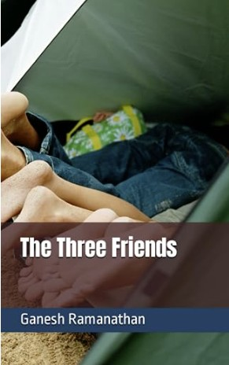

The Three Friends
This is a story set in a middle-class Indian city of the late eighties and early nineties. The book follows the growing up of three friends Anand, Vijay and Monu who study in the same school and end up doing a lot of mischief. The innocence, the camaraderie and their friendship provide incidents which are adventurous, funny and entertaining. This book will appeal to each and every individual whose inner kid is still alive. The stories of the mango hunt and the haunted bungalow are some of the highlights of this book. This is a must read for young readers who will get a glimpse of the simplicity of the Indian city life during the period. For readers who were growing up in the eighties and nineties, this book might well be a nostalgic trip down memory lane. School life is often the most cherished time in one's life and this book will provide an opportunity to relive the time.